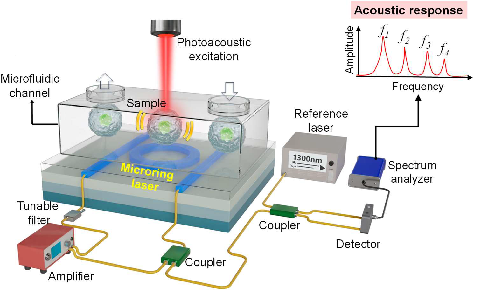

TECHNOLOGY
TECHNOLOGICAL BACKGROUND OF MBARC

Mechanical Barcoding: M-BARC combines microlaser acoustic sensors with microfluidics on a single chip. As cells flow one by one through microchannels, tiny lasers turn their acoustic signals into a mechanical barcode. The method is label-free, leaves samples intact, and uses surface chemistry to keep channels stable and biocompatible. It is being tested with end users in IVF, clinical microbiology and drug screening to make mechanical analysis an everyday tool.
TECHNOLOGICAL OUTCOME OF MBARC